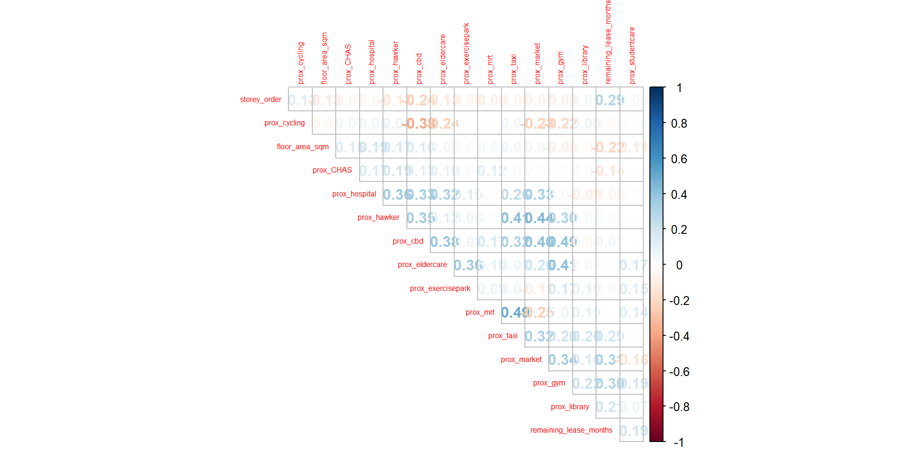

pacman::p_load(httr, tidyverse, sf, tmap, jsonlite, progress,
spdep, GWmodel, SpatialML, rsample, Metrics,
knitr, spatialRF, randomForestExplainer,
rvest, stringr, lubridate)Take-Home_Ex03
- httr - allows HTTP calls to OneMap API
- jsonlite - read json files to tibbular data frame
- sf - handles geospatial data
- tmap - handles maps
- progress - tracks computations
geocoding HDB resale data
HDBresale <- read_csv("data/hdb/HDBresale.csv") %>%
filter(flat_type=="4 ROOM") %>%
filter(month >= "2024-07" & month <="2025-09")Rows: 218399 Columns: 11
── Column specification ────────────────────────────────────────────────────────
Delimiter: ","
chr (8): month, town, flat_type, block, street_name, storey_range, flat_mode...
dbl (3): floor_area_sqm, lease_commence_date, resale_price
ℹ Use `spec()` to retrieve the full column specification for this data.
ℹ Specify the column types or set `show_col_types = FALSE` to quiet this message.HDBresale$street_name<-gsub(
"ST\\.", "SAINT",
HDBresale$street_name
)geocode <- function(block, streetname) {
base_url="https://onemap.gov.sg/api/common/elastic/search"
address<- paste(block, streetname, sep=" ")
query <- list("searchVal" = address,
"returnGeom" = "Y",
"getAddrDetails" = "N",
"pageNum" = "1")
res <- GET(base_url, query = query)
restext <- content(res, as="text")
output <- fromJSON(restext) %>%
as.data.frame() %>%
select(results.LATITUDE, results.LONGITUDE)
return(output)
}HDBresale$LATITUDE <- 0
HDBresale$LONGITUDE <- 0
for (i in 1:nrow(HDBresale)){
temp_output <- geocode(HDBresale[i,4], HDBresale[i,5])
HDBresale$LATITUDE[i] <- temp_output$results.LATITUDE
HDBresale$LONGITUDE[i] <- temp_output$results.LONGITUDE
}write_rds(HDBresale, "data/rds/HDBresale.rds")HDBresale<-read_rds('data/rds/HDBresale.rds')
HDBresale_sf <- st_as_sf(HDBresale,
coords = c("LONGITUDE", "LATITUDE"),
crs = 4326) %>%
st_transform(crs=3414)Preparing attribute data
storey_mapping <- c("01 TO 03" = 1, "04 TO 06" = 2, "07 TO 09" = 3,
"10 TO 12" = 4, "13 TO 15" = 5, "16 TO 18" = 6,
"19 TO 21" = 7, "22 TO 24" = 8, "25 TO 27" = 9,
"28 TO 30" = 10, "31 TO 33" = 11, "34 TO 36" = 12,
"37 TO 39" = 13, "40 TO 42" = 14, "43 TO 45" = 15,
"46 TO 48" = 16, "49 TO 51" = 17)
HDBresale_sf$storey_order <- storey_mapping[HDBresale_sf$storey_range]HDBresale_sf <- HDBresale_sf %>%
mutate(
years = as.numeric(str_extract(remaining_lease, "^\\d+")),
months = as.numeric(str_extract(remaining_lease, "\\d+(?=\\s+month)")) %>%
replace_na(0),
remaining_lease_months = (years * 12) + months
)HDBresale_sf <- HDBresale_sf %>%
mutate(
unit_age_months = (99 * 12) - remaining_lease_months
)busstop <- fromJSON("data/transport/BusStops.json") %>%
as.data.frame
busstop_sf <- st_as_sf(busstop,
coords = c("value.Longitude", "value.Latitude"),
crs = 4326) %>%
st_transform(crs=3414)%>%
select(value.BusStopCode, geometry)bs_within_350m <- st_is_within_distance(
HDBresale_sf, busstop_sf, dist=350) #measurement is in meters
HDBresale_sf <- HDBresale_sf %>%
mutate(bus_within350m = map_int(bs_within_350m, length))mrt <- st_read('data/transport/LTAMRTStationExitKML.kml') %>%
st_transform(crs=3414)Reading layer `MRT_EXITS' from data source
`C:\clyerica\ISSS626-GAA\Take-home_Ex\Take-home_Ex03\data\transport\LTAMRTStationExitKML.kml'
using driver `KML'
Simple feature collection with 563 features and 2 fields
Geometry type: POINT
Dimension: XYZ
Bounding box: xmin: 103.6368 ymin: 1.264972 xmax: 103.9893 ymax: 1.449157
z_range: zmin: 0 zmax: 0
Geodetic CRS: WGS 84HDBresale_sf <- HDBresale_sf %>%
mutate(
prox_mrt = as.numeric(
st_distance(geometry,
mrt[st_nearest_feature(
geometry, mrt), ],
by_element = TRUE)
)/1000
)mrt_within_350m <- st_is_within_distance(
HDBresale_sf, mrt, dist=350) #measurement is in meters
HDBresale_sf <- HDBresale_sf %>%
mutate(mrt_within350m = map_int(mrt_within_350m, length))cycling <- st_read('data/transport/CyclingPathNetworkKML.kml') %>%
st_transform(crs=3414)Reading layer `CYCLINGPATH' from data source
`C:\clyerica\ISSS626-GAA\Take-home_Ex\Take-home_Ex03\data\transport\CyclingPathNetworkKML.kml'
using driver `KML'
Simple feature collection with 4265 features and 2 fields
Geometry type: MULTILINESTRING
Dimension: XY
Bounding box: xmin: 103.6882 ymin: 1.272643 xmax: 103.9663 ymax: 1.458944
Geodetic CRS: WGS 84HDBresale_sf <- HDBresale_sf %>%
mutate(
prox_cycling = as.numeric(
st_distance(geometry,
cycling[st_nearest_feature(
geometry, cycling), ],
by_element = TRUE)
)/1000
)taxi <- st_read('data/transport/LTATaxiStopKML.kml') %>%
st_transform(crs=3414)Reading layer `TAXISTOP' from data source
`C:\clyerica\ISSS626-GAA\Take-home_Ex\Take-home_Ex03\data\transport\LTATaxiStopKML.kml'
using driver `KML'
Simple feature collection with 366 features and 2 fields
Geometry type: POINT
Dimension: XYZ
Bounding box: xmin: 103.637 ymin: 1.26463 xmax: 103.9903 ymax: 1.458947
z_range: zmin: 0 zmax: 0
Geodetic CRS: WGS 84HDBresale_sf <- HDBresale_sf %>%
mutate(
prox_taxi = as.numeric(
st_distance(geometry,
taxi[st_nearest_feature(
geometry, taxi), ],
by_element = TRUE)
)/1000
)
t_within_350m <- st_is_within_distance(
HDBresale_sf, taxi, dist=350) #measurement is in meterspreschool <- st_read("data/family-facility/PreSchoolsLocation.kml")%>%
st_transform(crs=3414)Reading layer `PRESCHOOLS_LOCATION' from data source
`C:\clyerica\ISSS626-GAA\Take-home_Ex\Take-home_Ex03\data\family-facility\PreSchoolsLocation.kml'
using driver `KML'
Simple feature collection with 2290 features and 2 fields
Geometry type: POINT
Dimension: XYZ
Bounding box: xmin: 103.6878 ymin: 1.247759 xmax: 103.9897 ymax: 1.462134
z_range: zmin: 0 zmax: 0
Geodetic CRS: WGS 84within_350m <- st_is_within_distance(
HDBresale_sf, preschool, dist=350) #measurement is in meters
HDBresale_sf <- HDBresale_sf %>%
mutate(preschool_within350m = map_int(within_350m, length))kindergartens <- st_read("data/family-facility/Kindergartens.kml") %>%
st_transform(crs=3414)Reading layer `KINDERGARTENS' from data source
`C:\clyerica\ISSS626-GAA\Take-home_Ex\Take-home_Ex03\data\family-facility\Kindergartens.kml'
using driver `KML'
Simple feature collection with 448 features and 2 fields
Geometry type: POINT
Dimension: XYZ
Bounding box: xmin: 103.6887 ymin: 1.247759 xmax: 103.9717 ymax: 1.455452
z_range: zmin: 0 zmax: 0
Geodetic CRS: WGS 84k_within_350m <- st_is_within_distance(
HDBresale_sf, kindergartens, dist=350) #measurement is in meters
HDBresale_sf <- HDBresale_sf %>%
mutate(kindergarten_within350m = map_int(k_within_350m, length))childcare <- st_read("data/family-facility/ChildCareServices.kml") %>%
st_transform(crs=3414)Reading layer `CHILDCARE' from data source
`C:\clyerica\ISSS626-GAA\Take-home_Ex\Take-home_Ex03\data\family-facility\ChildCareServices.kml'
using driver `KML'
Simple feature collection with 1925 features and 2 fields
Geometry type: POINT
Dimension: XYZ
Bounding box: xmin: 103.6878 ymin: 1.247759 xmax: 103.9897 ymax: 1.462134
z_range: zmin: 0 zmax: 0
Geodetic CRS: WGS 84c_within_350m <- st_is_within_distance(
HDBresale_sf, childcare, dist=350) #measurement is in meters
HDBresale_sf <- HDBresale_sf %>%
mutate(childcare_within350m = map_int(c_within_350m, length))prischool=read_csv('data/family-facility/Generalinformationofschools.csv')prischool$LATITUDE <- 0
prischool$LONGITUDE <- 0
for (i in 1:nrow(prischool)){
temp_output <- geocode(prischool[i,3],'')
prischool$LATITUDE[i] <- temp_output$results.LATITUDE
prischool$LONGITUDE[i] <- temp_output$results.LONGITUDE
}write_rds(prischool, 'data/rds/prischool.rds')prischool<-read_rds('data/rds/prischool.rds')
prischool_sf <- st_as_sf(prischool,
coords = c("LONGITUDE", "LATITUDE"),
crs = 4326) %>%
st_transform(crs=3414)p_within_1km <- st_is_within_distance(
HDBresale_sf, prischool_sf, dist=1000) #measurement is in meters
HDBresale_sf <- HDBresale_sf %>%
mutate(prischool_within1km = map_int(p_within_1km, length))studentcare <- st_read("data/family-facility/StudentCareServicesKML.kml") %>%
st_transform(crs=3414)Reading layer `STUDENTCARE' from data source
`C:\clyerica\ISSS626-GAA\Take-home_Ex\Take-home_Ex03\data\family-facility\StudentCareServicesKML.kml'
using driver `KML'
Simple feature collection with 386 features and 2 fields
Geometry type: POINT
Dimension: XYZ
Bounding box: xmin: 103.6876 ymin: 1.27474 xmax: 103.963 ymax: 1.456667
z_range: zmin: 0 zmax: 0
Geodetic CRS: WGS 84sc_within_350m <- st_is_within_distance(
HDBresale_sf, studentcare, dist=350) #measurement is in meters
HDBresale_sf <- HDBresale_sf %>%
mutate(studentcare_within350m = map_int(sc_within_350m, length))HDBresale_sf <- HDBresale_sf %>%
mutate(
prox_studentcare = as.numeric(
st_distance(geometry,
studentcare[st_nearest_feature(
geometry, studentcare), ],
by_element = TRUE)/1000 #divide by 1000 to get measurement in km
)
)eldercare <- st_read('data/family-facility/EldercareServicesKML.kml') %>%
st_transform(crs=3414)Reading layer `ELDERCARE' from data source
`C:\clyerica\ISSS626-GAA\Take-home_Ex\Take-home_Ex03\data\family-facility\EldercareServicesKML.kml'
using driver `KML'
Simple feature collection with 133 features and 2 fields
Geometry type: POINT
Dimension: XYZ
Bounding box: xmin: 103.7119 ymin: 1.271472 xmax: 103.9561 ymax: 1.439561
z_range: zmin: 0 zmax: 0
Geodetic CRS: WGS 84HDBresale_sf <- HDBresale_sf %>%
mutate(
prox_eldercare = as.numeric(
st_distance(geometry,
eldercare[st_nearest_feature(
geometry, eldercare), ],
by_element = TRUE)
)/1000
)mpsz <- read_rds('data/rds/mpsz_cl.rds')
cbd <- mpsz %>%
filter(PLN_AREA_N=="DOWNTOWN CORE")%>%
st_union()
HDBresale_sf <- HDBresale_sf %>%
mutate(
prox_cbd = as.numeric(
st_distance(geometry,
cbd[st_nearest_feature(
geometry, cbd), ],
by_element = TRUE)
)/1000
)chas <- st_read('data/facilities/CHASClinics.kml') %>%
st_transform(crs=3414)Reading layer `MOH_CHAS_CLINICS' from data source
`C:\clyerica\ISSS626-GAA\Take-home_Ex\Take-home_Ex03\data\facilities\CHASClinics.kml'
using driver `KML'
Simple feature collection with 1193 features and 2 fields
Geometry type: POINT
Dimension: XYZ
Bounding box: xmin: 103.5818 ymin: 1.016264 xmax: 103.9903 ymax: 1.456037
z_range: zmin: 0 zmax: 0
Geodetic CRS: WGS 84HDBresale_sf <- HDBresale_sf %>%
mutate(
prox_CHAS = as.numeric(
st_distance(geometry,
chas[st_nearest_feature(
geometry, chas), ],
by_element = TRUE)
)/1000
)food <- st_read("data/facilities/EatingEstablishments.kml") %>%
st_transform(crs=3414)Reading layer `EATING_ESTABLISHMENTS' from data source
`C:\clyerica\ISSS626-GAA\Take-home_Ex\Take-home_Ex03\data\facilities\EatingEstablishments.kml'
using driver `KML'
Simple feature collection with 34378 features and 2 fields
Geometry type: POINT
Dimension: XYZ
Bounding box: xmin: 103.6113 ymin: 1.234038 xmax: 104.0222 ymax: 1.469795
z_range: zmin: 0 zmax: 0
Geodetic CRS: WGS 84f_within_350m <- st_is_within_distance(
HDBresale_sf, food, dist=350) #measurement is in meters
HDBresale_sf <- HDBresale_sf %>%
mutate(foodestablishments_within350m = map_int(f_within_350m, length))ep <- st_read('data/facilities/ParksSGKML.kml') %>%
st_transform(crs=3414)Reading layer `RELAXSG' from data source
`C:\clyerica\ISSS626-GAA\Take-home_Ex\Take-home_Ex03\data\facilities\ParksSGKML.kml'
using driver `KML'
Simple feature collection with 52 features and 2 fields
Geometry type: POINT
Dimension: XYZ
Bounding box: xmin: 103.7076 ymin: 1.27462 xmax: 103.993 ymax: 1.46118
z_range: zmin: 0 zmax: 0
Geodetic CRS: WGS 84HDBresale_sf <- HDBresale_sf %>%
mutate(
prox_exercisepark = as.numeric(
st_distance(geometry,
ep[st_nearest_feature(
geometry, ep), ],
by_element = TRUE)
)/1000
)gyms <- st_read('data/facilities/GymsSGKML.kml') %>%
st_transform(crs=3414)Reading layer `EXERCISEFACILITIES' from data source
`C:\clyerica\ISSS626-GAA\Take-home_Ex\Take-home_Ex03\data\facilities\GymsSGKML.kml'
using driver `KML'
Simple feature collection with 159 features and 2 fields
Geometry type: POINT
Dimension: XYZ
Bounding box: xmin: 103.6938 ymin: 1.262063 xmax: 103.9518 ymax: 1.435078
z_range: zmin: 0 zmax: 0
Geodetic CRS: WGS 84HDBresale_sf <- HDBresale_sf %>%
mutate(
prox_gym = as.numeric(
st_distance(geometry,
gyms[st_nearest_feature(
geometry, gyms), ],
by_element = TRUE)
)/1000
)hawker <- st_read('data/facilities/HawkerCentresKML.kml') %>%
st_transform(crs=3414)Reading layer `HAWKERCENTRE' from data source
`C:\clyerica\ISSS626-GAA\Take-home_Ex\Take-home_Ex03\data\facilities\HawkerCentresKML.kml'
using driver `KML'
Simple feature collection with 125 features and 2 fields
Geometry type: POINT
Dimension: XYZ
Bounding box: xmin: 103.6974 ymin: 1.272716 xmax: 103.9882 ymax: 1.449017
z_range: zmin: 0 zmax: 0
Geodetic CRS: WGS 84HDBresale_sf <- HDBresale_sf %>%
mutate(
prox_hawker = as.numeric(
st_distance(geometry,
hawker[st_nearest_feature(
geometry, hawker), ],
by_element = TRUE)
)/1000
)hospitals <- read_csv('data/facilities/hospitals_with_coordinates.csv')Rows: 24 Columns: 7
── Column specification ────────────────────────────────────────────────────────
Delimiter: ","
chr (4): hospital_name, address, hospital_type, town
dbl (3): postal_code, latitude, longitude
ℹ Use `spec()` to retrieve the full column specification for this data.
ℹ Specify the column types or set `show_col_types = FALSE` to quiet this message.hospitals_sf <- st_as_sf(hospitals,
coords = c("longitude", "latitude"),
crs = 4326) %>%
st_transform(crs=3414)HDBresale_sf <- HDBresale_sf %>%
mutate(
prox_hospital = as.numeric(
st_distance(geometry,
hospitals_sf[st_nearest_feature(
geometry, hospitals_sf), ],
by_element = TRUE)
)/1000
)library <- st_read('data/facilities/Libraries.kml') %>%
st_transform(crs=3414)Reading layer `LIBRARIES' from data source
`C:\clyerica\ISSS626-GAA\Take-home_Ex\Take-home_Ex03\data\facilities\Libraries.kml'
using driver `KML'
Simple feature collection with 27 features and 2 fields
Geometry type: POINT
Dimension: XYZ
Bounding box: xmin: 103.7045 ymin: 1.263922 xmax: 103.9494 ymax: 1.448197
z_range: zmin: 0 zmax: 0
Geodetic CRS: WGS 84HDBresale_sf <- HDBresale_sf %>%
mutate(
prox_library = as.numeric(
st_distance(geometry,
library[st_nearest_feature(
geometry, library), ],
by_element = TRUE)
)/1000
)market <- st_read('data/facilities/NEAMarketandFoodCentreKML.kml') %>%
st_transform(crs=3414)Reading layer `MARKET_FOOD_CENTRE' from data source
`C:\clyerica\ISSS626-GAA\Take-home_Ex\Take-home_Ex03\data\facilities\NEAMarketandFoodCentreKML.kml'
using driver `KML'
Simple feature collection with 110 features and 2 fields
Geometry type: POINT
Dimension: XYZ
Bounding box: xmin: 103.7105 ymin: 1.272589 xmax: 103.9882 ymax: 1.443405
z_range: zmin: 0 zmax: 0
Geodetic CRS: WGS 84HDBresale_sf <- HDBresale_sf %>%
mutate(
prox_market = as.numeric(
st_distance(geometry,
market[st_nearest_feature(
geometry, market), ],
by_element = TRUE)
)/1000
)parks <- st_read('data/facilities/Parks.geojson') %>%
st_transform(crs=3414)Reading layer `Parks' from data source
`C:\clyerica\ISSS626-GAA\Take-home_Ex\Take-home_Ex03\data\facilities\Parks.geojson'
using driver `GeoJSON'
Simple feature collection with 441 features and 4 fields
Geometry type: POINT
Dimension: XY
Bounding box: xmin: 103.6929 ymin: 1.264367 xmax: 104.0538 ymax: 1.461944
Geodetic CRS: WGS 84HDBresale_sf <- HDBresale_sf %>%
mutate(
prox_parks = as.numeric(
st_distance(geometry,
parks[st_nearest_feature(
geometry, parks), ],
by_element = TRUE)
)/1000
)pharmacy <- st_read('data/facilities/RetailpharmacylocationsKML.KML') %>%
st_transform(crs=3414)Reading layer `REGISTERED_PHARMACY' from data source
`C:\clyerica\ISSS626-GAA\Take-home_Ex\Take-home_Ex03\data\facilities\RetailpharmacylocationsKML.kml'
using driver `KML'
Simple feature collection with 269 features and 2 fields
Geometry type: POINT
Dimension: XYZ
Bounding box: xmin: 103.699 ymin: 1.2563 xmax: 104.0025 ymax: 1.448227
z_range: zmin: 0 zmax: 0
Geodetic CRS: WGS 84HDBresale_sf <- HDBresale_sf %>%
mutate(
prox_pharmacy = as.numeric(
st_distance(geometry,
pharmacy[st_nearest_feature(
geometry, pharmacy), ],
by_element = TRUE)
)/1000
)malls <- read_csv('data/facilities/singapore_malls_pois.csv') Rows: 249 Columns: 8
── Column specification ────────────────────────────────────────────────────────
Delimiter: ","
chr (5): name, category, address, website, phone
dbl (2): lat, lon
lgl (1): brand
ℹ Use `spec()` to retrieve the full column specification for this data.
ℹ Specify the column types or set `show_col_types = FALSE` to quiet this message.malls_sf <- st_as_sf(malls,
coords = c("lon", "lat"),
crs = 4326) %>%
st_transform(crs=3414)
HDBresale_sf <- HDBresale_sf %>%
mutate(
prox_mall = as.numeric(
st_distance(geometry,
malls_sf[st_nearest_feature(
geometry, malls_sf), ],
by_element = TRUE)
)/1000
)supermarket <- st_read('data/facilities/SupermarketsKML.KML') %>%
st_transform(crs=3414)Reading layer `SUPERMARKETS' from data source
`C:\clyerica\ISSS626-GAA\Take-home_Ex\Take-home_Ex03\data\facilities\SupermarketsKML.kml'
using driver `KML'
Simple feature collection with 526 features and 2 fields
Geometry type: POINT
Dimension: XYZ
Bounding box: xmin: 103.6258 ymin: 1.24715 xmax: 104.0036 ymax: 1.461526
z_range: zmin: 0 zmax: 0
Geodetic CRS: WGS 84HDBresale_sf <- HDBresale_sf %>%
mutate(
prox_supermarket = as.numeric(
st_distance(geometry,
supermarket[st_nearest_feature(
geometry, supermarket), ],
by_element = TRUE)
)/1000
)nrp <- st_read('data/hdb/NRPKML.kml') %>%
st_transform(crs=3414)Reading layer `HDBNRPUNDERCONSTRUCTION' from data source
`C:\clyerica\ISSS626-GAA\Take-home_Ex\Take-home_Ex03\data\hdb\NRPKML.kml'
using driver `KML'
Simple feature collection with 35 features and 2 fields
Geometry type: MULTIPOLYGON
Dimension: XY
Bounding box: xmin: 103.6928 ymin: 1.282851 xmax: 103.9557 ymax: 1.445789
Geodetic CRS: WGS 84extract_kml_field <- function(html_text, field_name) {
if (is.na(html_text) || html_text == "") return(NA_character_)
page <- read_html(html_text)
rows <- page %>% html_elements("tr")
value <- rows %>%
keep(~ html_text2(html_element(.x, "th")) == field_name) %>%
html_element("td") %>%
html_text2()
if (length(value) == 0) NA_character_ else value
}nrp_sf <- nrp %>%
mutate(
address = map_chr(Description, extract_kml_field, "NAME"),
est_cmpltn = map_chr(Description, extract_kml_field, "ESTMT_CNSTRN_CMPLTN")
) %>%
select(-Name, -Description) %>%
mutate(
quarter_num = as.numeric(str_extract(est_cmpltn, "^\\d")),
year_num = str_extract(est_cmpltn, "\\d{4}$"),
end_month = case_when(
quarter_num == 1 ~ "03", # Q1 ends in March
quarter_num == 2 ~ "06", # Q2 ends in June
quarter_num == 3 ~ "09", # Q3 ends in September
quarter_num == 4 ~ "12", # Q4 ends in December
TRUE ~ NA_character_
),
cmpltn_date = paste0(year_num, "-", end_month)
) %>%
# Select the original column and the final date object
select(address, cmpltn_date, geometry)HDBresale_sf <- HDBresale_sf %>%
st_join(nrp_sf %>% select(cmpltn_date), left = TRUE) %>%
mutate(
nrp_completed = case_when(
!is.na(cmpltn_date) & (month > cmpltn_date) ~ 1,
TRUE ~ 0
)
) %>%
select(-cmpltn_date)Cleaning up table
HDBresale_sf <- HDBresale_sf %>%
select(month, resale_price, floor_area_sqm, storey_order,
remaining_lease_months, prox_mrt, prox_cycling,
prox_taxi, prox_studentcare, prox_eldercare, prox_cbd,
prox_CHAS, prox_exercisepark, prox_gym, prox_hawker,
prox_hospital, prox_library, prox_market, prox_parks,
prox_pharmacy, prox_mall, prox_supermarket,
bus_within350m, preschool_within350m,
kindergarten_within350m, childcare_within350m,
prischool_within1km, studentcare_within350m,
mrt_within350m, nrp_completed)Creating train/test data sets
We will train our predictive model using HDB resale transaction data from July 2024 to June 2025, to predict resale prices from July to September 2025. The following code chunk splits the dataset into training and test data sets.
HDB_train <- HDBresale_sf %>%
filter(month<='2025-06')
HDB_test <- HDBresale_sf %>%
filter(month>'2025-06')To prototype the models, we will use a smaller dataset to avoid excessively long run times for training and testing.
set.seed(1234)
train_sample <- HDB_train %>%
sample_n(5000)checking of overlapping points
when using GWmodel to calibrate explanatory or predictive models, it is important to ensure no overlapping point features
overlapping_points<- train_sample %>%
mutate(overlap=lengths(st_equals(., .))>1)
num_overlapping<- sum(overlapping_points$overlap)
num_overlapping[1] 3113spatial jittter
jthe code chunk below uses st_jitter of sf package to move point features by 1m to avoid overlapping point features
train_sample<-train_sample %>%
st_jitter(amount=1)
HDB_train<- HDB_train %>%
st_jitter(amount = 1)Data sampling
initial_sample of rsample package allows splitting of data into test and training sets.
set.seed(1234)
resale_split <- initial_split(train_sample, prop = 6.67/10)
train_data <- training(resale_split)
test_data <- testing(resale_split)Computing Correlation matrix
HDB_train_nogeo <- HDB_train %>%
st_drop_geometry() %>%
select(c(-(month)))
corrplot::corrplot(cor(HDB_train_nogeo[, 2:17]),
diag = FALSE,
order = "AOE",
tl.pos = "td",
tl.cex = 0.5,
method = "number",
type = "upper")
Non Spatial Multiple Linear Regression
price_mlr <- lm(resale_price ~ floor_area_sqm + storey_order +
remaining_lease_months + prox_mrt + prox_cycling +
prox_taxi + prox_studentcare + prox_eldercare + prox_cbd +
prox_CHAS + prox_exercisepark + prox_gym + prox_hawker +
prox_hospital + prox_library + prox_market + prox_parks +
prox_pharmacy + prox_mall + prox_supermarket +
bus_within350m + preschool_within350m +
kindergarten_within350m + childcare_within350m +
prischool_within1km + studentcare_within350m +
mrt_within350m + nrp_completed,
data=HDB_train)
summary(price_mlr)
Call:
lm(formula = resale_price ~ floor_area_sqm + storey_order + remaining_lease_months +
prox_mrt + prox_cycling + prox_taxi + prox_studentcare +
prox_eldercare + prox_cbd + prox_CHAS + prox_exercisepark +
prox_gym + prox_hawker + prox_hospital + prox_library + prox_market +
prox_parks + prox_pharmacy + prox_mall + prox_supermarket +
bus_within350m + preschool_within350m + kindergarten_within350m +
childcare_within350m + prischool_within1km + studentcare_within350m +
mrt_within350m + nrp_completed, data = HDB_train)
Residuals:
Min 1Q Median 3Q Max
-265804 -38179 -2401 34974 407809
Coefficients:
Estimate Std. Error t value Pr(>|t|)
(Intercept) -72803.214 10690.565 -6.810 1.02e-11 ***
floor_area_sqm 4546.060 92.226 49.293 < 2e-16 ***
storey_order 16724.442 297.205 56.272 < 2e-16 ***
remaining_lease_months 564.657 4.414 127.936 < 2e-16 ***
prox_mrt -14789.928 2323.425 -6.366 2.02e-10 ***
prox_cycling -13580.063 1407.471 -9.649 < 2e-16 ***
prox_taxi -52370.528 1870.494 -27.998 < 2e-16 ***
prox_studentcare -39996.130 3365.624 -11.884 < 2e-16 ***
prox_eldercare -7027.167 1207.773 -5.818 6.10e-09 ***
prox_cbd -16772.157 197.236 -85.036 < 2e-16 ***
prox_CHAS -2315.697 5860.795 -0.395 0.69276
prox_exercisepark -4361.460 1008.972 -4.323 1.55e-05 ***
prox_gym 1404.407 863.520 1.626 0.10390
prox_hawker 15921.322 1512.214 10.528 < 2e-16 ***
prox_hospital 15374.946 596.637 25.769 < 2e-16 ***
prox_library 191.179 1164.475 0.164 0.86960
prox_market -27497.598 601.019 -45.752 < 2e-16 ***
prox_parks -2034.265 1724.324 -1.180 0.23813
prox_pharmacy -1526.215 2044.748 -0.746 0.45544
prox_mall -17106.290 2004.779 -8.533 < 2e-16 ***
prox_supermarket -14786.807 3627.286 -4.077 4.60e-05 ***
bus_within350m 8344.884 385.997 21.619 < 2e-16 ***
preschool_within350m 1377.000 1835.540 0.750 0.45316
kindergarten_within350m 1887.572 1394.018 1.354 0.17575
childcare_within350m -1968.093 1926.655 -1.022 0.30703
prischool_within1km 818.182 367.904 2.224 0.02617 *
studentcare_within350m -1773.928 591.640 -2.998 0.00272 **
mrt_within350m 8020.543 504.118 15.910 < 2e-16 ***
nrp_completed 2558.748 3523.147 0.726 0.46769
---
Signif. codes: 0 '***' 0.001 '**' 0.01 '*' 0.05 '.' 0.1 ' ' 1
Residual standard error: 60500 on 11651 degrees of freedom
Multiple R-squared: 0.8484, Adjusted R-squared: 0.848
F-statistic: 2328 on 28 and 11651 DF, p-value: < 2.2e-16References
- https://www.kaggle.com/datasets/muhdirshath/hospitals-in-singapore/data
- https://www.kaggle.com/datasets/sunnysharma432/singapore-malls-pois/data
- https://www-jstor-org.libproxy.smu.edu.sg/stable/pdf/45389328
- https://personal.ntu.edu.sg/qfeng/BianChenFengLi20200804paper.pdf
- https://blogs.ubc.ca/zhuanlim/files/2022/07/Lim_Zhuan_A0224991X.pdf